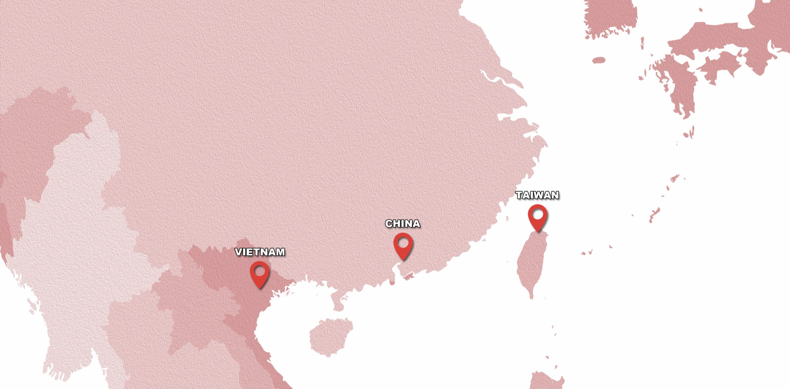
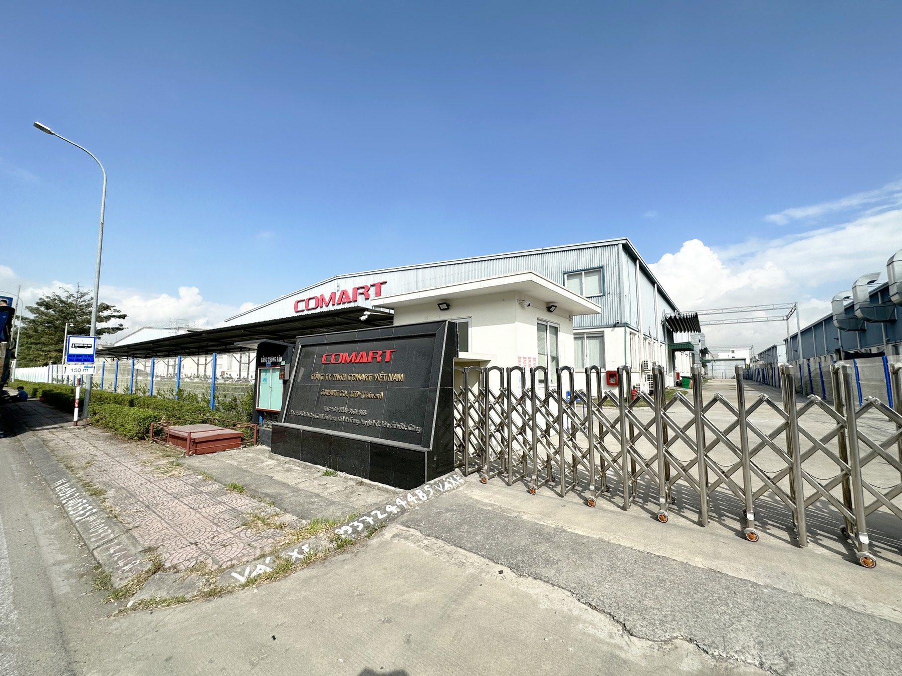
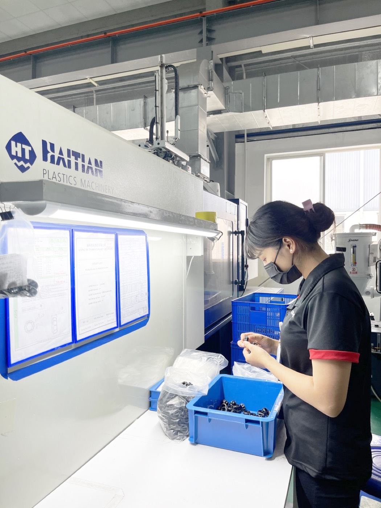

您有一個想法
一個概念、一個市場需求，還沒有規格。在任何資源投入之前，我們協助定義產品、結構、材質方向與目標成本。
產品規劃與設計 →
Make mobile life better.
以創新的設計、卓越的品質與優異的服務， 為行動生活創造最好的體驗。
客戶找上我們時，產品的成熟度差異很大。我們從您實際所在的位置， 界定要做的工作——以及要承擔的風險。
我們的服務是依照您的開發流程來編排，而不是依照我們的部門或機器清單。 同一個專案團隊會跟著產品，從概念一路到出貨。
MOQ 與交期會依產品、材質、模具複雜度與訂單數量評估。 告訴我們您的產品現在的狀況，我們會提出一份務實的開發與生產計畫。

品牌流失的時間與利潤，多半發生在設計、模具、射出與組裝之間的交接上。 我們把這些交接拿掉了。
這些是我們為國際品牌開發與製造過的產品。這幾個領域說明我們的經驗來自哪裡—— 但不是我們承接範圍的上限。
手機與行動裝置的支架、固定座、保護配件與隨身配件。
結合機構設計、電子與散熱考量的充電應用。
車內零件與配件，須符合汽車內裝對耐用度與表面質感的要求。
消費性電子產品的外殼、結構與整合工作。
射出件、五金件與電子件必須整合成同一個組件的產品。
您不需要自己挑一家工廠、再自己管它。我們會依您的產品成熟度、製程、成本、 交期、產地與出口需求，提出生產配置的建議。

怡業股份有限公司 — 台灣新北市
東莞恒群塑膠有限公司 — 中國廣東東莞
越南怡業責任有限公司 — 越南北江省雲中工業區

「一個專案，一份計畫——由我們在三個基地之間配置。」
管控點從進料一路延伸到出貨，並由可靠性測試、環境測試， 以及認證要求時導入的第三方實驗室來支撐。
以集團層級持有，涵蓋各營運據點。適用範圍、適用法人與有效期限 都有內部文件記錄，並可依客戶要求提供。
證書是核發給特定法人與特定範圍。完整文件由您的業務窗口 依您的法規遵循需求提供。

展覽、公司發展、認證更新、新設備與產能，以及新產品發表。
載入消息中…
